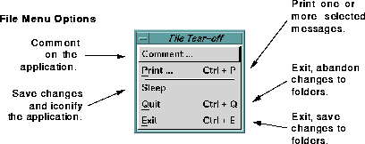

This section describes the options available in the
File pull-down
menu. To see the
File pull-down menu options, click the
File
button, or type
Meta-F. The following menu appears:

The
File pull-down menu contains options for sending comments
about
Ishmail to H&L Customer Support, printing messages, and
exiting from the program. To choose one of the options, either
click on the option, type its associated mnemonic (the
underscored letter in the option's name) or type its associated
Ctrl-key sequence.
File menu options are:
- Comment ...
- Generates a message to H&L Customer Support.
Selecting the
Comment ... button causes the Comment on
Application window to open. The Comment on
Application window is a modified version of
Ishmail's
standard Composition window. You use the Comment on
Application window to report a software bug or a
performance problem, request an enhancement, or
simply comment on the application. (See
Comment on
Application.)
- Print ...
- Sends the selected message or group of messages to a
printer. The
Print ... option is selectable only if one or more
messages are currently selected in the
Folder Contents
viewing area.
Selecting the
Print ... button opens the
Print Message window
in which you specify how message headers are to be
handled. The options are:
- Print all headers
- Select this option to print all headers including
headers that are normally hidden.
- Print displayed headers only
- Select this option to print only the headers that
are displayed in the message header section.
- Don't print headers
- Select this option to print just the body of the
message.
If you select multiple messages to print, two additional
options appear in the
Print Message window:
- Print separately
- Select this option to print each message
individually (a print command is issued for each
message).
- Print together
- Select this option to concatenate and print the
selected messages via a single print command.
After making your print selection(s):
- Click
Print to send the file to the printer.
- Click
Cancel to cancel the print operation and
close the
Print Message window.
- Click
Help for information about printing files.
If the message contains MIME-encoded inclusions or
attachments, the
Print MIME dialog window is displayed.
You select options in this window to specify which
included files or attached files to print or to skip. See
Printing MIME Messages for the detailed print
procedure.
- Sleep
- Puts
Ishmail to "sleep" by saving changes to folders and
iconifying the Main window. You can use this option
when you are leaving your system but plan to read your
mail from another system. Using the
Sleep option will
prevent potential conflicts between changes to folders
you have made (but not yet saved) while in
Ishmail, and
changes you may make to the same folders with another
mail tool.
Selecting the
Sleep option opens the
Save confirmation
window, which asks if you wish to save any changes you
have made to mail folders.
NOTE:
If you forget to exit
Ishmail or put it to sleep
before going to another system, you can send
Ishmail a
SIGHUP signal (kill -1) to cause it to
save changes and exit gracefully.
- Quit
- Quickly exit from the
Ishmail program, abandoning any
changes you have made to mail folders.
- Exit
- Gracefully exit the
Ishmail program, saving changes to
mail folders. Selecting
Exit opens the
Exit confirmation
window. If you select the
Yes option in the
Exit
confirmation window, AND if you have made changes to
mail folders that have not yet been saved, the
Save
confirmation window appears, from which you can
choose to save or discard changes to the applicable mail
folders before exiting the program. Otherwise, the
program exits without saving your changes.
Preceding Section: Folder Contents Viewing Area
Following Section: Main Window Folder Menu
Parent Section: Ishmail Main Window
Contents of Ishmail User's Guide